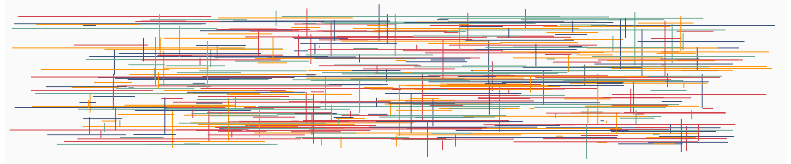

Teaching
Philosophy
My primary educational goal is to enhance statistical literacy and communication among my students. To me, statistical literacy means combining careful data analysis with scientific expertise to grapple with problems. Given the quantity of data available today, I want my students to learn how to engage in the type of quantitative reasoning and decision making necessary for understanding applications in the sciences, business, and public policy.
Going beyond the didacticism of basic statistical literacy, I strive to inform students about the fundamental role statistics and computation plays in the comprehension of real-world phenomena across disciplines and to motivate them to use this knowledge in their daily lives. Finally, I endeavour to cultivate curiosity in my students and to create an open and nurturing learning environment.
Current courses
Stat 406 Methods for Statistical Learning (2022W1)
Stat 550 Techniques of Statistical Consulting (2022W2)
Stat 548 PhD Qualifying Papers

Links to materials from old courses
At UBC
Stat 535a Topics in Computational Statistics: Convex Optimization (2021W1)
At Indiana University, Bloomington
At the University of Chicago, Booth School of Business
41-911 Advanced Econometrics (Aut18)